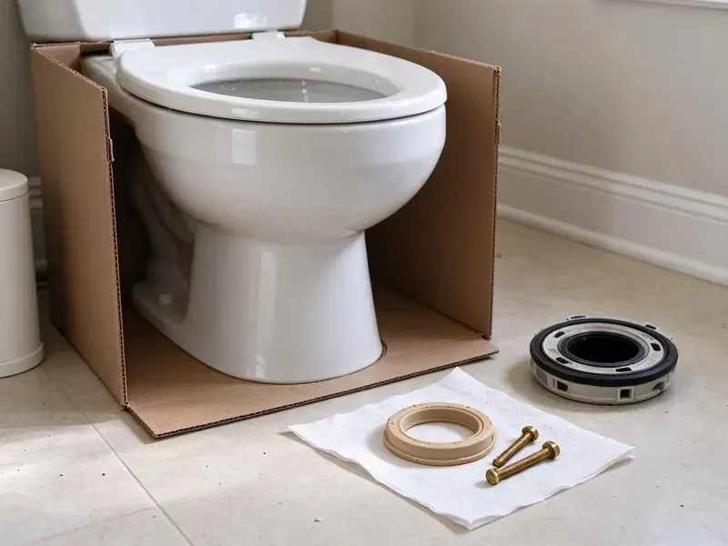
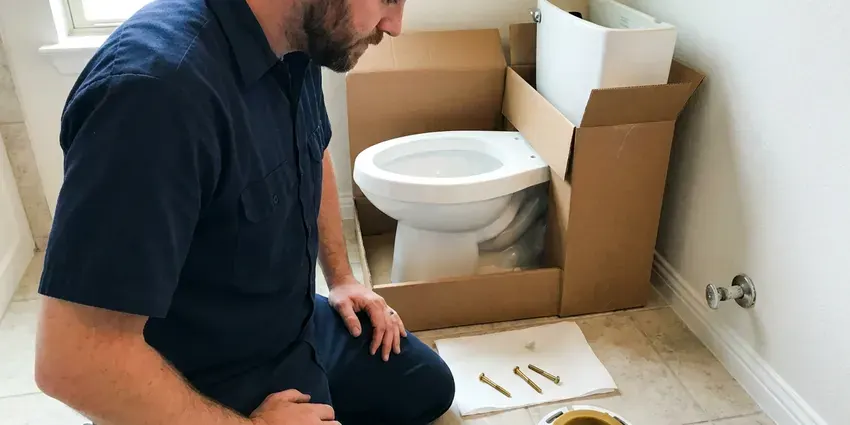
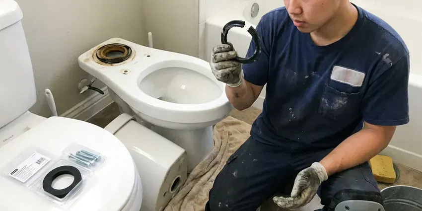
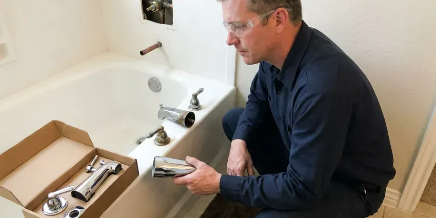

Shower Replacement in Jefferson City, MO
Cracked pan, bad valve, failing grout. FGV Plumbing replaces showers in Jefferson City, MO for good.
- Workmanship Guarantee
- Leaking Pans Replaced
- Anti-Scald Valve Upgrades
- Pressure-Tested Valves

A Safer Shower Starts Here in Jefferson City, MO
Schedule an inspection and get a clear quote for the work.
Shower Replacement in Jefferson City, MO
FGV Plumbing replaces worn valves, leaking pans, cracked fiberglass units and failing tile showers. We remove the old parts, inspect the framing and subfloor for water damage and install new plumbing to current code, then pressure-test it before the walls close. Testing is not optional.
Some of what we do:
- Pan and Drain Replacement After Hidden Leaks
- Tile Shower Pan and Enclosure Work
- Fiberglass and Acrylic Unit Replacement

Additional Bathroom Plumbing Services in Jefferson City, MO
From toilets to showers, our bathroom plumbing team in Jefferson City, MO handles repairs, installs, and upgrades with tidy, code-compliant work.



Toilet Installation in Jefferson City

Toilet Bowl Replacement near Jefferson City


Customers
Why Choose FGV Plumbing for Shower Replacement in Jefferson City, MO?
A shower replacement is only as good as what is under it. We check the drain connection, the subfloor and the studs around the valve before the new shower goes in, because those are where old leaks leave damage nobody saw. We find it often.
- Clean Worksite, We protect floors and tidy up each day during the job.
- Local Knowledge, We know local building codes and typical plumbing in Jefferson City, MO homes.
- Damage Check, We inspect framing and subfloor for rot before we rebuild.
Citywide Coverage
Every part of Jefferson City gets the same standard on a replacement. Older homes often need extra work, like new drains or supply lines, and we price that up front after the inspection so it does not surprise you halfway through. You know first.
Experienced Team
Each plumber at FGV Plumbing is background-checked and trained regularly. They follow the same safety and cleanup steps on every job, from covering floors to testing every joint before the walls close. Same process every time.
Safety-First Approach
We check before and after every shower replacement. We document damage before demo and, once the new shower is in, test every joint and check below. Dry means done.
Trusted Certified Jefferson City Plumbing Services Professionals
At FGV Plumbing, we are proud to offer certified plumbing services throughout Jefferson City, MO. Those papers on the wall mean something. Our plumbers hold recognized industry credentials, and they follow strict safety and quality rules on every repair, installation and maintenance call we run.
Call Us Now PHCC Plumbing Contractor Recognition
PHCC Plumbing Contractor Recognition Better Business Bureau (BBB) Accreditation
Better Business Bureau (BBB) Accreditation Angi Certified Pro
Angi Certified Pro ISO 9001 Quality Management Certification
ISO 9001 Quality Management CertificationShower Replacement Jobs We Handle in Jefferson City, MO
Shower Unit Replacement in Jefferson City
Cracked fiberglass units leak at the base first. The crack usually starts where the base was never fully supported, flexing a little every shower until the gel coat splits and water gets under the unit into the subfloor. We pull the old unit. Then we check the subfloor and set the new base on a full mortar bed.

Prefab Shower Replacement in Jefferson City
Prefab units past their useful life usually show it at the base. Fading, hairline cracks and a soft spot underfoot all mean water has been getting through, and we check the subfloor and the wall framing once the old unit is out. New unit next. We set it on mortar and seal the drain.
Replacing Showers Damaged by Hard Water in Jefferson City, MO
Water in much of Missouri is moderately hard to hard, so scale gradually builds in water heaters, faucets and fixtures. Scale shows up first as a weak showerhead and a stiff handle. Given time, scale seizes cartridges, pits valve bodies and etches glass beyond cleaning, which is when we replace. A softener helps the new one. We can recommend one.
Shower Pan Replacement in Jefferson City, MO
Cracked pans damage subfloors, walls and nearby rooms. On slab homes, water can travel under the flooring and show up as staining or odors in a hallway, so we trace it before we start tearing anything out. Then the pan comes out. We install the new pan with slope and waterproofing, then flood-test it.
Showerhead and Trim Upgrade in Jefferson City, MO
If the valve is sound, new trim and a new head can refresh the shower without opening the wall. A trim kit matched to your valve, a new head and an optional slide bar update the look without demo. Rubber nozzles wipe clean. It costs the least.
Commercial Shower Replacement in Jefferson City
Gyms and hotels need showers that survive heavy use. We replace worn units and valves with commercial-grade parts, tamper-resistant trim and drains sized for several showers at once, all to commercial and accessibility code. We phase the job. Some stalls stay open while we work.
Budget Shower Replacement in Jefferson City, MO
Replacing just the shower can freshen a bathroom without a full remodel. An acrylic unit and a new valve cost far less than tile and hold up for years when set right. We price options side by side. The choice is yours.

Shower Valve and Fixture Upgrades in Jefferson City
Sometimes the shower only needs its guts replaced. When the pan and walls are fine, a new valve, diverter and trim fix drips and swings without demo. The difference is real. Half a day, usually.
Nearby Shower Replacement Near Me in Jefferson City, MO
Homes around Jefferson City range from older houses with original two-handle valves to newer builds with failing pans. Our trucks carry fittings for every common pipe type, plus transitions to older galvanized and cast iron. Old drains get checked.
A local plumber knows local showers. Ours have pulled enough original valves and fiberglass units out of homes around town to know what is behind the wall before we open it. Our quotes hold up.
FGV Plumbing at a Glance
- Licensed and insured plumbers serving Jefferson City, MO
- 24/7 emergency service with same-day scheduling
- Upfront, flat-rate pricing before work begins
- 4.9-star rated by 307+ Missouri customers
Jefferson City Map
Jefferson City Information
- Population
- 42,552
- Area codes
- Local
- Service area
- Jefferson City and communities within 40 miles
- Nearby
- Columbia, Wentzville, O'Fallon, Wildwood
Older homes in Jefferson City, MO often still have valves with no scald protection. A new valve adds scald protection and ends leaks inside the wall.
Expert Services
Reach out to FGV Plumbing for honest, reliable plumbing from people who know the trade in Jefferson City, MO.
Our Specialized Plumbing Services in Jefferson City, MO
At FGV Plumbing, you get every kind of plumbing service from one company across Jefferson City, MO. From leak detection to full system installs, our team works fast and charges fair prices on homes and commercial properties alike. Here are the core services we offer:


How a Shower Replacement Goes in Jefferson City, MO
We inspect, recommend and replace with careful, code-compliant work.
Book an Inspection
Call (816) 330-2338 or use our form to schedule a visit. We look at your shower and give you a written quote.
Remove the Old Shower
We take out the old shower and protect the bathroom along the way. Old materials leave with us.
Install the New Shower
We install the new shower and plumbing, level and seal it and test it to code.
Frequently Asked Questions About Shower Replacement in Jefferson City
Shower replacement in Jefferson City, MO runs from about $1,500 for a basic unit swap to over $10,000 for a custom tiled walk-in. Shower type, materials and plumbing changes drive the price, with slab drain moves adding the most. Tile costs more. You get a detailed quote after we inspect.
Most replacements wrap up in one to three days. Tile showers and big reroutes often take three to seven days, longer with structural repair. We give you a timeline up front.
Kohler, Delta, Moen, American Standard and Sterling cover most of our installs in Missouri homes. We can work with a brand you prefer or recommend options that fit your budget, with an eye on parts availability down the road. We care about future parts.
A valve swap takes about half a day. Pans take two to four days, and full tiled rebuilds run one to two weeks.
Cosmetic updates are fine to DIY. Full replacement means plumbing and waterproofing, and errors there cost more than the job itself. A plumber is worth it.
Yes, if the walls and pan are sound. An access panel or small opening lets us swap the valve, and a bigger trim plate covers it.
Our workmanship warranty covers the installation. Manufacturer warranties cover the valve, the fixtures and the unit itself, and we go over both in detail during your consultation. Keep your paperwork.
Trim and showerheads are DIY-friendly. Valve, pan and drain replacements are hidden work where mistakes cause leaks, so a licensed plumber is the better choice.
Hear From Customers Who Hired Our Plumbing Experts

Patricia H.
We had a slab leak that two other companies could not find. FGV Plumbing located it in under an hour with a listening device. They rerouted the line through the attic instead of breaking up the floor, so we kept our kitchen tile.
Slab Leak Repair · Jefferson City, MO
Jessica T.
We were adding a gas range in a kitchen remodel and needed a new line run from the meter. The plumber pulled the permit, ran the pipe through the crawl space, and had it inspected and approved within the week.
Gas Line Repair · Jefferson City, MO
Daniel K.
A pipe burst in the garage ceiling at 11 at night. Someone answered on the second ring, and the plumber was in my driveway about fifty minutes later. He shut off the main, cut out the split section, and had water back on before 2 am.
Emergency Plumbing · O'Fallon, MODiane F.
My kitchen faucet had dripped for months and I finally got tired of hearing it at night. FGV Plumbing came out the next morning, replaced the cartridge and the O rings, and tightened a loose base that was letting water under the sink.
Faucet Repair · Jefferson City, MO
Greg S.
I manage a small strip center with six tenants. FGV Plumbing handles our annual backflow testing and fixed a recurring clog in the shared sewer line that had been backing into the nail salon. Their reports come in clean and on time.
Commercial Plumbing · O'Fallon, MOMark T.
The floor drain in our office break room backed up every few weeks. The plumber ran a cable, then put a camera down and found roots at a joint about thirty feet out. Seeing it on the screen made the decision easy.
Drain Cleaning · St. Peters, MO